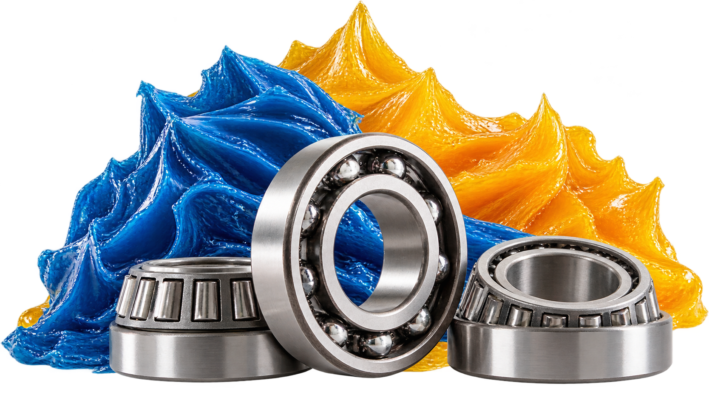

Graxas e Lubrificantes Especiais
Óleos e graxas técnicas para aplicações críticas, muitas delas disponíveis em versão atóxica NSF-H1, indicada para ambientes com risco de contato incidental com alimentos.
AplicaçõesIndústria alimentícia (NSF-H1), Compressores, Redutores e engrenagens, Rolamentos industriais

Aplicações atendidas
| Aplicação | Descrição | Observação |
|---|---|---|
| Redutores / Engrenagens Abertas | Óleos especiais para todos os tipos de redutores, graxas de alta adesividade para engrenagens abertas e óleos e graxas sintéticos para redutores com longos períodos de troca. Não atacam plásticos, elastômeros ou pinturas. | NSF-H1: Disponível |
| Compressores / Sistemas Hidráulicos e Pneumáticos | Óleos de alta performance para sistemas hidráulicos e pneumáticos. Sintéticos e semissintéticos para compressores de ar, refrigeração e gás, com período de troca de 3 a 8 vezes superior ao do óleo mineral. | Troca: 3–8x mais espaçada; NSF-H1: Disponível |
| Correntes / Cabos de Aço | Proteção contra corrosão, umidade, altas e baixas temperaturas, meios agressivos e altas cargas. Inclui lubrificantes secos. | NSF-H1: Disponível |
| Rolamentos e Mancais | Ampla gama para altas e baixas temperaturas, altas cargas, altas rotações, vibrações e meios agressivos, incluindo aplicações florestais e de mineração. | NSF-H1: Disponível |
| Motores Elétricos / Exaustores | Graxas de alta performance para altas e baixas temperaturas, agentes agressivos, ambientes úmidos, vapores e altas rotações, onde graxas minerais não têm bom desempenho. | — |
| Acoplamentos / Válvulas / Registros | Lubrificantes resistentes à água, gás e produtos químicos, indicados para vedações. | — |
Produtos indicados sob consulta, conforme a aplicação e a condição de trabalho.
Perguntas sobre graxas e lubrificantes especiais
Não encontrou sua dúvida? Fale com a gente pelo WhatsApp.
Perguntar no WhatsAppO que significa a certificação NSF-H1 e por que ela importa?
NSF-H1 é a categoria de lubrificantes considerados seguros em caso de contato incidental com alimentos, exigida em plantas do setor alimentício. Parte da linha de graxas e lubrificantes especiais Blasfen está disponível nessa categoria atóxica.
Qual o ganho real de usar óleo sintético em compressores?
Óleos sintéticos e semissintéticos para compressores podem proporcionar período de troca de 3 a 8 vezes superior ao óleo mineral, reduzindo paradas de manutenção e custo de troca ao longo do ano.
Quer indicação do produto certo para sua aplicação?
Envie a condição de trabalho (temperatura, carga, ambiente) e receba recomendação técnica.